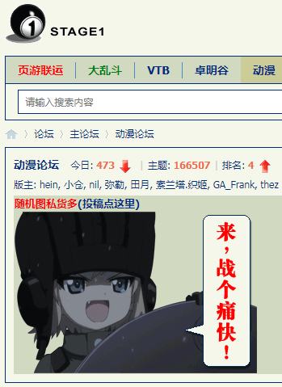
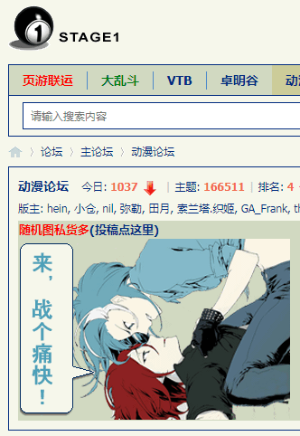
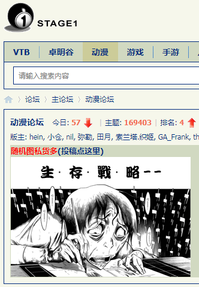

2020-11-02 21:05
刚爬起来酒劲还在头昏脑胀，上网乱转发现国际化大都市「华语第一精日论坛」出现一条色目含量甚高的重要情报：
央行系媒体再对马老师开火门儿清，句句打在要害
与此同时，耍钱的新浪或曰后浪正在奔走相告一条令色目情报掮客恼羞成怒气急败坏的重要情报：
21:01:10【四部门联合约谈蚂蚁集团有关人员】今天，中国人民银行、中国银保监会、中国证监会、国家外汇管理局对蚂蚁集团实际控制人马云、董事长井贤栋、总裁胡晓明进行了监管约谈。（证监会）
距离百善の新世界一翻两瞪眼，然后谁认赌服输或无能狂怒，满打满算还两天，砥砺奋进八年来都没急，现在急个啥？
顺便，兲朝正在进行人口普查，好歹目前身份证在我手里。不知道家贼是否已经帮或曰替我「提前」投下庄严的一票了，就像色目情报掮客声称家贼「提前」帮或曰替我找个骚货碧池肉便器老婆另立户口本并将其七大姑八大姨都弄进幽州投下庄严的一百票啊一百票一样。
不惮以最大的恶意揣测，四十多年前我所在的户口本，就是这么伪造出来的，四十多年来我所生活过的几个社区几十万户口本，也都是这么伪造出来的。那么迷宫地下城恶人谷充沛着色目混混鸡鸣狗盗之徒，就像粪坑充沛着苍蝇一样，当然顺理成章了。
2020-11-03 00:00
刚过零点，九省通衢の煎蛋之上出现一条色目含量甚高的舆论：
而国际化大都市「华语第一精日论坛」之上还是叫嚣「战个痛快①」，估计一翻两瞪眼之后还会面临漫长的扯皮。到底是亡灵巫师驱使骷髅大军集体投票还是高僧大德八万四千法身各自投票，还得看砥砺奋进八年来家贼拿我身份证都瞒着我干了些啥，举一反三触类旁通可也。
顺便，《异闻录》这边的「反派」当中的主流就是丐帮毒贩。南边的情况不清楚，按照汇丰银行传统业务推理。北边还是参考真实历史，架空中安排色目太君建立「晋绥银行」「甘陕银行」负责洗钱，并把国际一流和谐宜居之都渗透得如同筛子一般，炮制了几十万假户口本分布在各个小区，无论我搬到哪里都能发现年迈的色目混混鸡鸣狗盗之徒自称扎根几十年。对了，叫嚣「入关」的通古斯太君应该是当年伪满洲国那一拨又与满铁调查课联手合作了，色目太君肯定会见缝插针，成立「连盛银行」负责为肃慎毒贩融资。
2020-11-03 01:13
南直隶「远东第一体育论坛」出现一条武德甚为充沛或者费拉甚为不堪的重要情报：
国家发改委等14部门印发：全国家庭应急物资储备建议清单国家发改委网站10月30日消息，近日，国家发改委等14部门印发《近期扩内需促消费的工作方案》。
其中提到，在秋冬季推出全国家庭应急物资储备建议清单。参照北京等地推出省级家用应急物资储备清单的经验，制定全国基础版家庭应急物资储备建议清单,鼓励各地因地制宜加速制定扩充版清单,引导城市家庭进行家庭急救箱等医疗物资储备。
截至目前，包括北京、山东济南、浙江宁波、广东深圳、海南海口等地均已公布相关物资清单。各地清单多半囊括饼干、水、急救包、电筒等物资,以及现金、信用卡等财物，还有身份证、紧急联络表等重要资料。
可以作为正文〔017〕当中「战略物资储备」的参考，当然为了「打退丧尸三次进攻」而囤积的军火不计在内。
与此同时，国际一流和谐宜居之都「高学历精英社交圈」正在首页今日头条位置醒目应景推荐了一条武德甚为充沛或者费拉甚为不堪的重要情报：
如果下个月世界大战，你最想做什么？其中高赞回答当中提到了当年波黑内战中一个唤作「Selco」的人之自述，在没有电力、自来水和燃料但充沛着军队、警察、保安、雇佣兵、狙击手、色目混混鸡鸣狗盗之徒的莫斯塔尔生存两三年的亲身经历。
而九省通衢の煎蛋之上唤作贝爷粉丝团的荒野求生爱好者，在向有关部门举报我的个人博客站点之后就再没出现，不知道跑到哪里去实践了。
在「匿名岛夷」之上，还有情报掮客推送高学历精英新浪シナ新浪或曰后浪奔走相告的重要情报：
这些情报结合起来，就可以构思《说郭全传（后编）》剧情了，截止到《To Be Or Not To Be Continued》，「郭春海保卫九省通衢」不是比喻。
简单说，国际一流和谐宜居之都春夏之交那时候我见过「战后」的小场面，而重庆红卫兵驾驶坦克军舰武斗大场面则听说过并有钦定史料描述，再加上热心网友翻译引进的波黑内战亲历记，以及官方媒体翻译引进的南斯拉夫红色文艺精品，「襄阳郢州争夺战」的素材算是比较充沛了。
未完待续
- ①
  